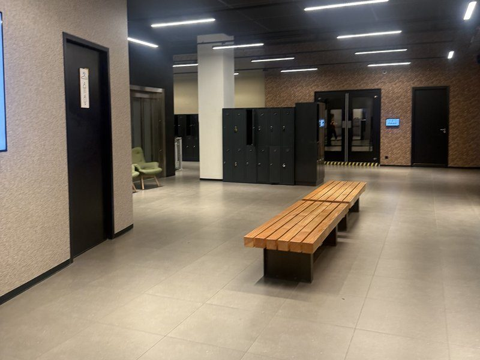
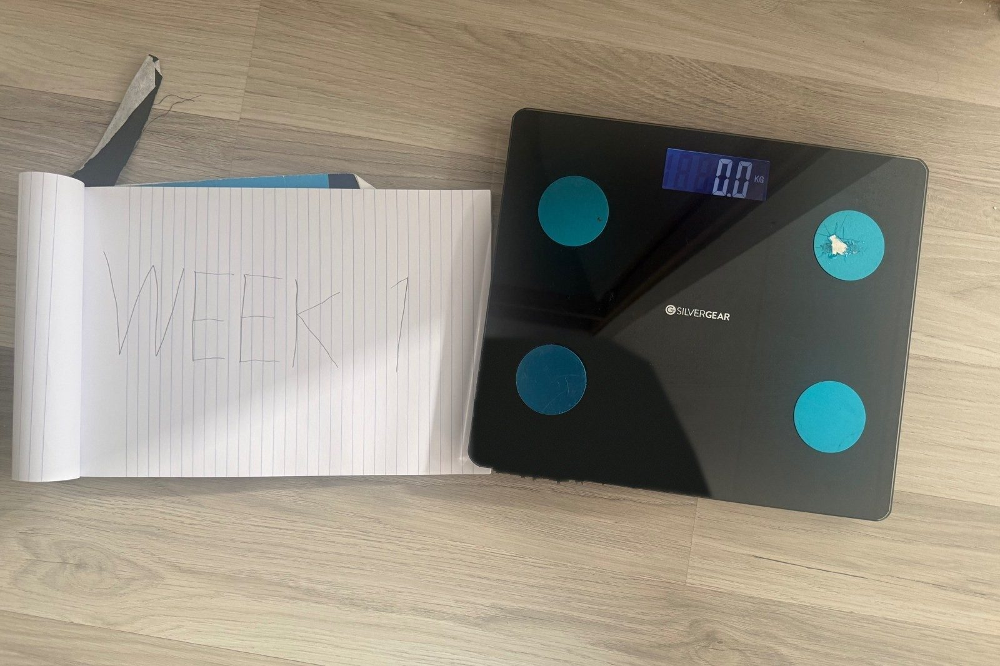
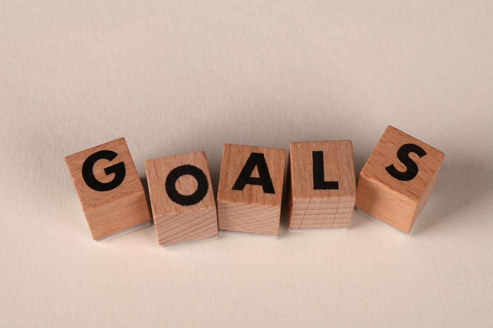
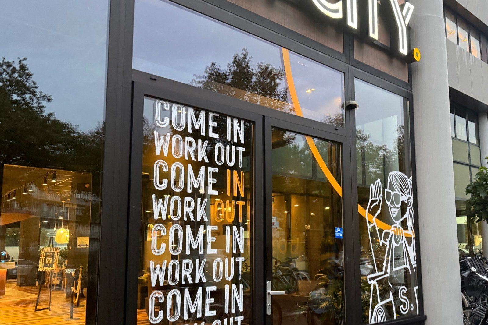

Confused on where to start? This page will explain everything
These articles explain where and how to begin your journey

These articles explain where and how to begin your journey

Before you start, take an honest look at where you are right now. Weigh yourself, take a few measurements and maybe take a progress photo so you have something to compare later (trust me, you’ll regret it if you don’t). Test your fitness with simple things like how many push-ups you can do or how long you can walk or run without stopping. Think about your daily routine: how much you sleep, what you usually eat, how active your job is and how active you really are. Finally, work out how many hours per week you can realistically give to training. Knowing your starting point makes it much easier to see your progress.

Pick one clear goal instead of trying to change everything at once. If you try to do everything at once, you quickly get overwhelmed. This could be losing fat, building muscle, getting stronger or improving your stamina. Make it specific, like “lose 5 kg” or “do 10 pull-ups”, rather than just “get fit”. Put a realistic date on it, for example 12 weeks from now, so you have something to work towards. Don’t sweat it if you can’t reach your goal in that timeframe, setbacks are bound to happen. Break it into smaller weekly goals to keep yourself motivated. Write your goal down somewhere you’ll see it every day.

Start with a simple plan you can actually stick to, like three full-body workouts a week. You don’t need fancy equipment or a perfect diet on day one. Focus on showing up consistently, because consistency matters more than intensity in the beginning. Track your workouts and meals so you can see what’s working. After a few weeks, slowly increase the weight, reps or difficulty. Don’t worry about being perfect, just keep going and improve as you learn.